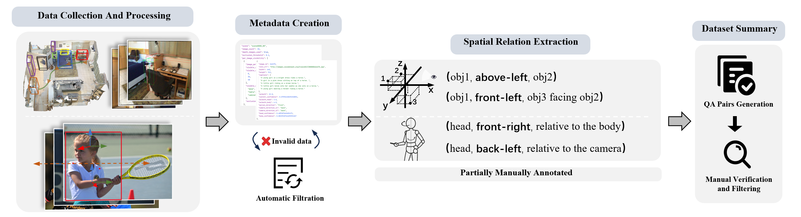

ViewSpatial-Bench construction pipeline

ViewSpatial-Bench comprises five localization recognition tasks across two complementary perspective frameworks. From the camera perspective: (1) Object Relative Direction recognition(Cam-Rel. Dir.), which determines spatial relationships between objects directly from images; (2) Object View Orientation recognition(Cam-Obj. Oir.), which identifies the gaze direction of individuals relative to the camera from an egocentric viewpoint. These tasks evaluate VLMs' intuitive, egocentric spatial understanding abilities. From the human perspective: (3) Object Relative Direction recognition(Per-Rel. Dir.), which involves adopting the viewpoint of a character in the image to determine the spatial relationships of other objects from their perspective; (4) Object View Orientation recognition(Per-Obj. Oir.), which requires assuming the position of a character in the image to determine the direction of their gaze; (5) Scene Simulation Relative Direction recognition(Per-Sce. Sim.), which requires modeling oneself within a spatial scene across sequential frames to determine relative positions of other objects. These latter three tasks assess VLMs' abstract, perception-dependent spatial awareness while accommodating complex human pose variations and spatial information in embodied scenarios.